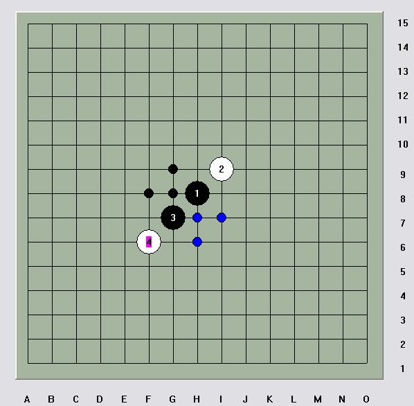
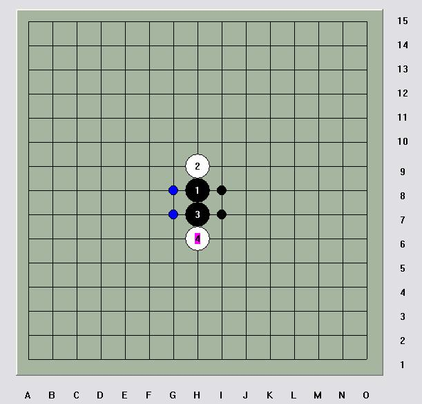

[互动棋谱]也说斜月“天地止”
#1 [互动棋谱]也说斜月“天地止” 作者：岳麓小棋后 发表时间：2009-1-12 18:35:52
今天在Q游上看见茗弈珍惜和开心下了几盘这个“天地止”，随手研究了下，这个“天地止”看似霸道，其实相当地弱，和松月天地止真有天地之别呀。转动脑筋想想，五子棋里直斜的微妙也许就在这电光火石的一瞬。

斜月“天地止”产生6个双活2。

松月天地止产生4个双活2。
此外，从直觉上我们就可以判断松月天地止压缩空间的能力更强，而斜月“天地止”真会像那句马屁话，“如黄河之水一发不可收拾” 。
。
松斜的这种差异，归结于五子棋很基本的一个道理，直线易防，斜线易攻，直线压缩空间能力最强，而斜线拓展空间能力最强。
列了斜月“天地止”的五手两打下的两个胜点，当然应该还有其他的，只是不太好终结，纯属学习，共同进步，被砍是一种幸福，岳麓小棋后上。
 斜月天地止必败.rar
斜月天地止必败.rar
［ 茗弈小刀 于 2009-1-12 19:30:11 时奖励此帖[金币加 20 威望加1］
［本站用户 五子痴 于 2009-3-7 8:34:09 花5个金币送您鲜花一朵］
［此帖子已被 茗弈小刀 在 2009-4-22 19:31:36 编辑过］
#2 Re:也说斜月“天地止” 作者：阿花哥 发表时间：2009-1-12 19:03:32
 哦，棋乐无穷
哦，棋乐无穷
#3 Re:也说斜月“天地止” 作者：厦门小天 发表时间：2009-1-12 21:25:50
这些斜月4黑至少有4个必胜点，G10,F10都是地毯必胜的，所以山口规则下这个4也没用哈。
#4 Re:也说斜月“天地止” 作者：雅典娜 发表时间：2009-1-13 8:14:13
呵呵,这些简单棋理心里明白却讲不出来!很适合初学者,正好借来讲课一用!谢谢了!#5 Re:也说斜月“天地止” 作者：爱好者友 发表时间：2009-1-20 10:38:26
这个名字真不错#6 Re:也说斜月“天地止” 作者：缘来 发表时间：2009-1-25 4:39:13
“被砍是一种幸福，”赞！
偶像啊。。谢谢。。。
#7 Re:也说斜月“天地止” 作者：小枫叶 发表时间：2009-2-12 17:21:26
学习了！！！！！！！
#8 Re:也说斜月“天地止” 作者：夏百萧 发表时间：2009-2-13 0:39:08
斜指也能称为天地止.....#9 Re:也说斜月“天地止” 作者：小枫叶 发表时间：2009-3-4 15:32:30
学习了，谢谢小棋后了！#10 Re:也说斜月“天地止” 作者：茗奕的飞猪 发表时间：2009-3-6 9:01:31
不愧是小棋后啊，学习了！
#11 Re:也说斜月“天地止” 作者：香雪美景 发表时间：2009-3-6 13:36:07
厉害啊！我是太需要学习了
#12 Re:也说斜月“天地止” 作者：刀魂 发表时间：2009-3-8 9:57:59
感觉斜月的天地止一打杀 类似于松月的一打#13 Re:也说斜月“天地止” 作者：就是爱玩 发表时间：2009-3-27 19:02:42
支持小棋后的文章！